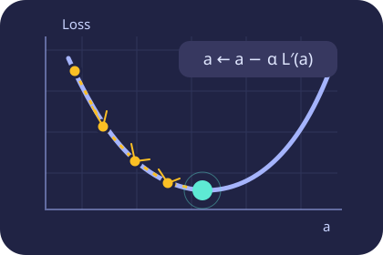

GRADIENT DESCENT
더 작은 오차를 향해,
한 걸음씩.
직선을 움직이면 예측값과 오차가 바뀝니다. 오차를 숫자와 그래프로 살펴보고, 경사하강법으로 작은 오차를 찾아가 보세요.
① 추세선과 오차② 경사하강법

직접 해 보는 핵심 실습
①부터 시작하면 데이터와 직선을 다음 경사하강법 활동으로 이어갈 수 있어요.
오차 개념 더 살펴보기
오차를 왜 제곱하는지 궁금할 때 따로 탐구해 보세요.
오차를 제곱하면 무엇이 달라질까?
직선과 데이터 점을 움직이며 양수·음수 오차의 상쇄, 제곱오차의 합, 가장 잘 맞는 직선을 비교합니다.
보충 실습 열기 →함께 보는 모션 해설
계산과 그래프가 이어지는 과정을 재생하거나 멈춰서 살펴보세요.